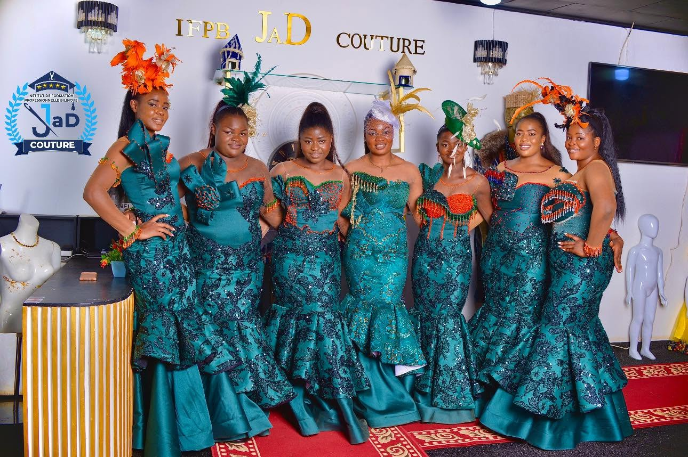

01 DQP / AQP
Coupe, Patronage & Confection
Couture Professionnelle
Apprentissage complet des techniques de coupe à plat, tracé de patrons, assemblage machine, confection de robes sirènes, vestes et finitions tailleur haut de gamme.
Diplôme : Préparation DQP & AQP MINEFOP
Lieu : En présentiel à l'atelier de Dschang